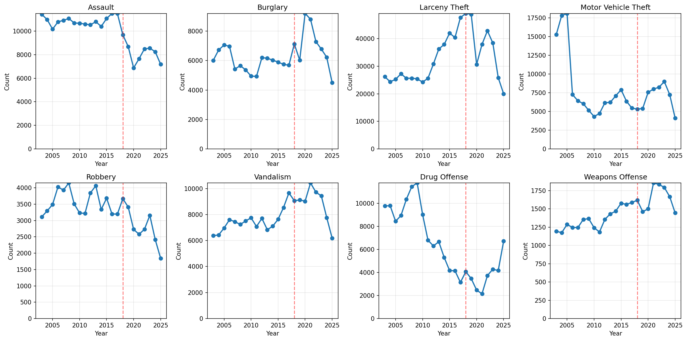
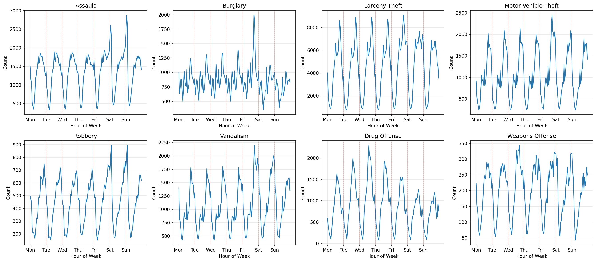
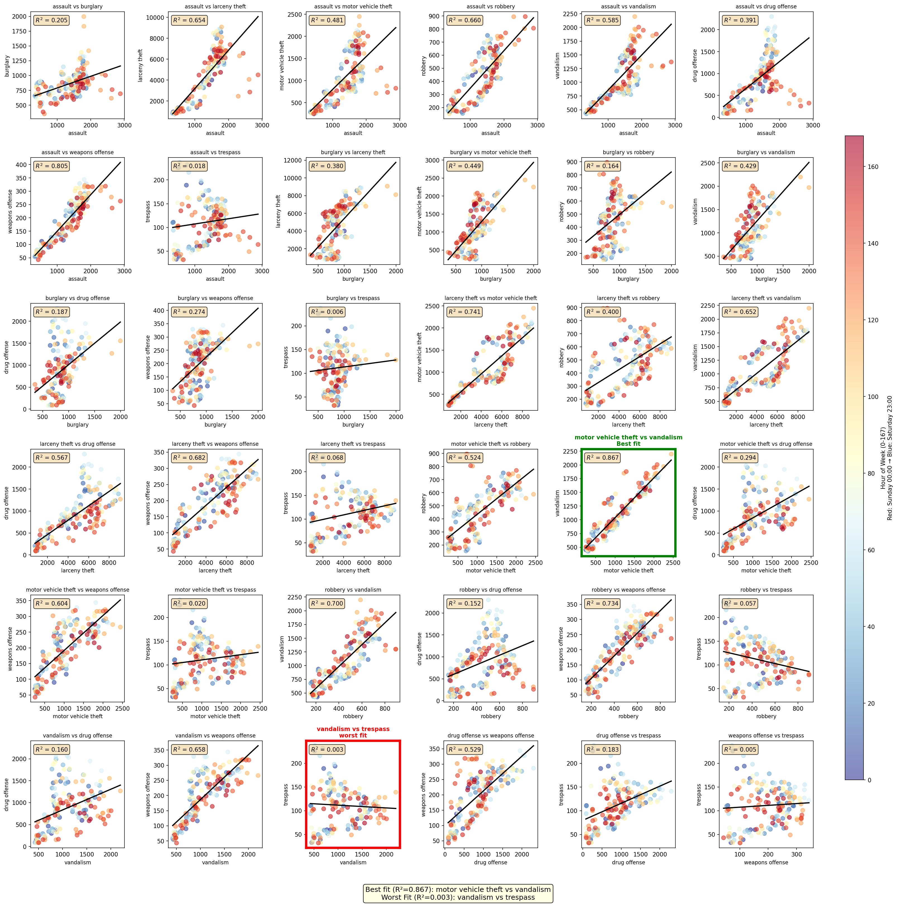

Explore comprehensive visualizations of San Francisco police incident reports spanning two decades. Uncover patterns in crime trends, temporal dynamics, and geographic hotspots through interactive data analysis.

Yearly crime trends showing patterns over two decades

Weekly patterns revealing which days see the most crime

Correlations between different types of crimes